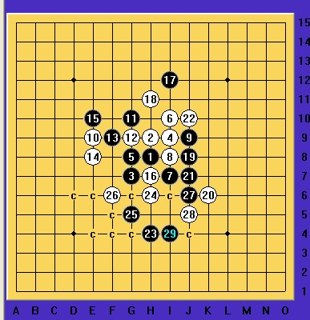
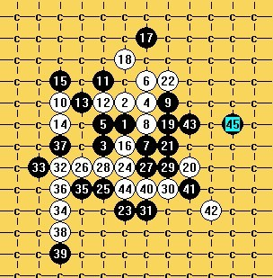
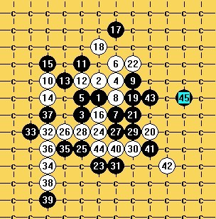

拆棋，vct
#1 拆棋，vct 作者：空恨社小仙 发表时间：2012-5-19 1:45:43
［此帖子已被 小红眼镜 在 2013-8-14 10:55:39 编辑过］
［此帖子已被 小红眼镜 在 2013-8-14 12:37:43 编辑过］
#2 Re:vct[初级] 作者：山城刀客 发表时间：2012-5-19 2:52:29

我把习题想的过于复杂了，开始一直以为需要联系上面的活2和眠3，原来答案是这样。
 答案.rar
答案.rar
［此帖子已被 山城刀客 在 2012-5-19 2:53:44 编辑过］
［ 空恨社小仙 于 2012-5-19 4:17:14 时花20金币送鲜花一朵］
#3 Re:山城刀客【==Re:vct[初级]==】 作者：空恨社小仙 发表时间：2012-5-19 4:17:57
 刀客v5!!!
刀客v5!!!
#4 Re:山城刀客【==Re:vct[初级]==】 作者：空恨社小仙 发表时间：2012-5-19 4:23:37
杀是杀了,可惜这路刀兄不是用vct的方式解决的 

#5 Re:vct[初级] 作者：极地剑客 发表时间：2012-5-19 5:29:01
mm熬夜威武#6 Re:vct[初级] 作者：自来水 发表时间：2012-5-19 8:57:25
初级。。。。
［ 空恨社小仙 于 2012-5-19 15:41:04 时花20金币送鲜花一朵］
#7 Re:自来水【==Re:vct[初级]==】 作者：空恨社小仙 发表时间：2012-5-19 15:42:03
对水爷来说可能连初级都不到啦
#8 Re:vct[初级] 作者：秋叶散人 发表时间：2013-7-19 13:17:54
这个怎么能算“初级”？？？！！！......好吧，我只好承认我的确不会下五子棋......
只是回这么一句好像略显单调了吧，我补充个上面得高手都不屑摆出的变化——十连击（街机“铁拳”的必杀技！呵呵）
请目算十步VCF。
我还是觉得这样的题要“接地气”得多，相信很多爱好者通过努力可以获得点“成就感”。 这个“初级”太打击人了,555555...
这个“初级”太打击人了,555555...
#9 Re:vct[初级] 作者：自来水 发表时间：2013-7-19 15:50:14
这个我会
P.S. 小仙题目"初级"的意思是针对拆棋而言的，目算要谨慎！
#10 Re:vct[初级] 作者：与郎共五 发表时间：2013-7-19 23:50:19
最简单的杀法：8-9